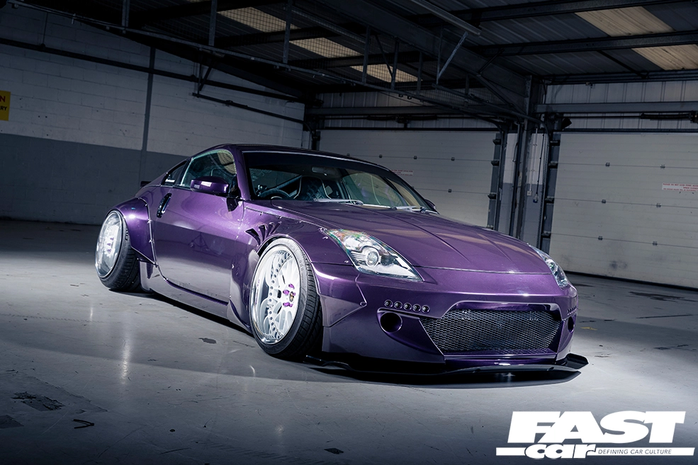

¿Qué es un Nissan 350Z? Resultado de imagen para nissan 350z descripcion El Nissan 350 Z es un coche único en el mercado español. No hay ningún otro cupé con una potencia en torno a 280 caballos por un precio similar. Los cupés entre 250 y 300 CV son el Nissan 350Z, Audi TT Coupe 3.2 quattro DSG 6 vel, el Jaguar XK8 Coupe y el Honda NSX 3.2 V6 DOHC VTEC Coupe
